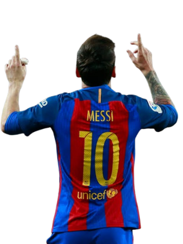

LIONEL MESSI
Jogador de futebol argentino nascido em Rosário na Argentina · 1987

UM DOS MAIORES TALENTOS QUE O FUTEBOL JÁ CONHECEU.
A história de uma lenda.
Do menino de Rosário ao topo do mundo
Lionel Messi nasceu em 24 de junho de 1987, em Rosário, na Argentina. Desde muito jovem, demonstrou uma enorme paixão e talento para o futebol.
Ainda criança, começou a destacar-se pelo seu talento e acabou por mudar-se para Espanha, onde iniciou a sua história no Barcelona.
No clube catalão, Messi tornou-se uma das maiores estrelas da história do futebol. Ao longo dos anos, conquistou títulos, marcou gols históricos e recebeu inúmeros prêmios individuais.
Pela seleção argentina, viveu momentos difíceis, mas continuou a lutar pelo sonho de conquistar grandes títulos. Em 2021, conquistou a Copa América e, em 2022, finalmente levantou a Taça do Mundo.
A sua história transformou-o numa referência para milhões de pessoas e numa das maiores lendas da história do futebol.
As maiores conquistas.
Champions League
Segunda Champions, dessa vez sendo artilheiro com 9 gols.
Terceira Champions, novamente sendo protagonista e artilheiro com 12 gols.

Quarta Champions, com o lendário trio MSN, considerado por muitos como o maior trio ofensivo da história.
Bolas de Ouro
:strip_icc()/i.s3.glbimg.com/v1/AUTH_bc8228b6673f488aa253bbcb03c80ec5/internal_photos/bs/2023/N/M/Q17BlOQNi9xHawzi1FFQ/000-33zh93v.jpg)
O maior vencedor
Lionel Messi conquistou a Bola de Ouro 8 vezes, nos anos: 2009 · 2010 · 2011 · 2012 · 2015 · 2019 · 2021 · 2023.
Com 8 Bolas de Ouro, Lionel Messi tornou-se o jogador que mais vezes conquistou este prêmio na história, consolidando-se como uma das maiores lendas do futebol mundial.
A tão sonhada Copa do Mundo
Um dos momentos mais marcantes da carreira de Lionel Messi aconteceu em 2022, no Mundial do Qatar. Depois de várias participações em Copas do Mundo, o argentino finalmente conquistou o troféu que faltava na sua carreira.
Messi foi uma das grandes figuras do torneio, marcando gols, dando assistências e liderando a seleção argentina até à final. Na decisão frente à França, a Argentina venceu nos pênaltis depois de um empate por 3-3 no tempo regulamentar e no prolongamento.
Com a conquista do Mundial de 2022, Lionel Messi completou uma carreira histórica pela seleção argentina e levantou finalmente a Taça do Mundo.
Números da carreira
GOLS
931 gols por clube e seleção
ASSISTÊNCIAS
423 assistências por clube e seleção (Maior assitente da hhistória)
TÍTULOS
46 (Maior vencedor da história do futebol)
PRÊMIOS INDIVIDUAIS
+58 (Maior vencedor de premios individuais da história do futebol)